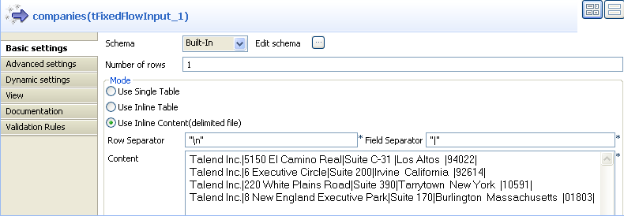
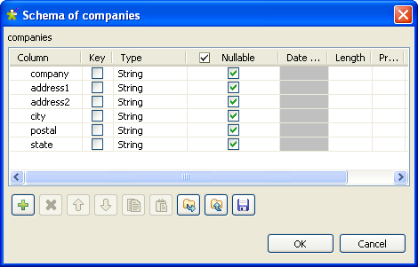
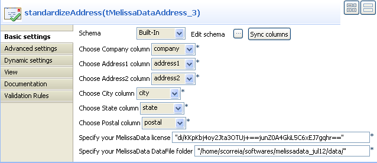
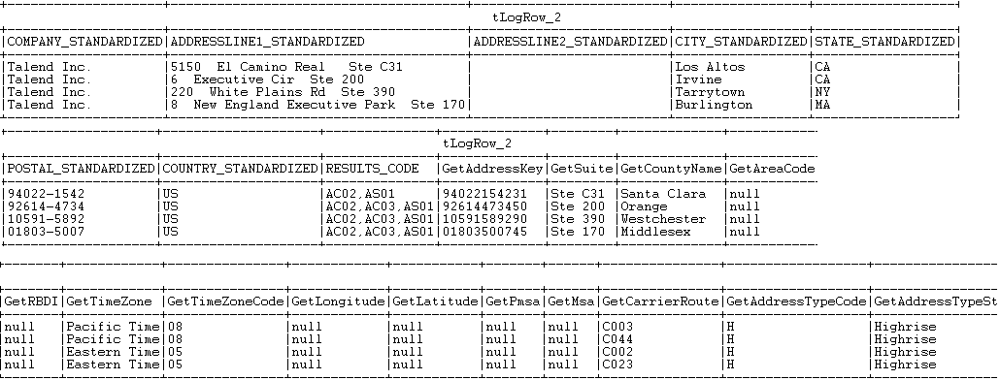

Avertissement
Ce composant est disponible dans la Palette du studio si vous avez souscrit à l'un des produits Talend Platform.
Ce composant de gestion d'adresse est le fruit de la collaboration de Talend et de Melissa Data, l'un des leaders mondiaux de validation d'adresses internationales
Pour plus d'informations concernant l'entreprise et ses outils logiciels, consultez le site Web http://www.melissadata.com/ (en anglais).
|
Famille de composant |
Data Quality | |
|
Fonction |
Le composant tMelissaDataAddress valide, corrige et standardise des adresses provenant du Canada et des Etats-Unis. Il effectue une boucle sur chaque ligne, lit toutes les adresses d'entrée et les compare au contenu d'un fichier de données MelissaData. NoteLe tMelissaDataAddress utilise la version de juillet 2012 de la bibliothèque MelissaData AddressObject. | |
|
Objectif |
Le tMelissaDataAddress vérifie qu'une adresse est correctement formatée et corrige les erreurs de format ou d'orthographe dans chaque ligne. | |
|
Basic settings |
Schema et Edit schema |
Un schéma est une description de lignes, il définit le nombre de champs qui sont traités et passés au composant suivant. Le schéma est soit local (built-in) soit distant dans le Repository. |
|
|
|
Built-in : Le schéma est créé et conservé pour ce composant seulement. Voir également le Guide utilisateur de Talend Data Integration Studio. |
|
|
|
Repository : Le schéma existe déjà et est stocké dans le Repository. Ainsi, il peut être réutilisable dans divers projets et Job designs. Voir également le Guide utilisateur de Talend Data Integration Studio. |
|
|
Choose Company column |
Sélectionnez dans la liste le nom de l'entreprise à analyser. |
|
|
Choose Address1 column |
Sélectionnez dans la liste la première colonne d'adresses à analyser. |
|
|
Choose Address2 column |
Sélectionnez dans la liste la seconde colonne d'adresses à analyser. |
|
|
Choose City column |
Sélectionnez dans la liste la colonne de villes à analyser. |
|
|
Choose State column |
Sélectionnez dans la liste la colonne d'états à analyser. |
|
|
Choose Postal column |
Sélectionnez dans la liste la colonne de codes postaux à analyser. |
|
|
Specify your MelissaData license |
Saisissez la clé de licence MelissaData fournie par MelissaData, lors de la commande de Data Quality Suite ou de l'API Address Object. La clé déverrouille les fonctionnalités de Address Object. Pour plus d'informations, consultez le site http://www.melissadata.com/ (en anglais) et téléchargez le Guide Reference Guide for Address Object depuis le centre de support de MelissaData. |
|
|
Specify your MelissaData DataFile folder |
Configurez le chemin d'accès au dossier de données MelissaData, fourni par MelissaData et installé localement. NoteAvant de pouvoir utiliser le composant tMelissaDataAddress, vous devez commander et télécharger Data Quality Suite ou l'API Address Object sur le site http://www.melissadata.com/. Le tMelissaDataAddress utilise la version de juillet 2012 de la bibliothèque MelissaData AddressObject. |
|
Advanced settings |
tStatCatcher Statistics |
Cochez cette case pour collecter les métadonnées de process du Job, aussi bien au niveau du Job qu’au niveau de chaque composant. |
|
Utilisation |
Ce composant est un composant intermédiaire et nécessite un flux d'entrée ainsi qu'un flux de sortie. | |
Ce scénario décrit un Job à trois composants qui :
utilise un composant tFixedFlowInput pour générer les données d'adresses à analyser,
utilise un composant tMelissaDataAddress pour analyser le schéma d'entrée ainsi que valider, corriger et standardiser les adresses des Etats-Unis générées par le tFixedFlowInput,
utilise un tLogRow afin d'écrire en sortie les adresses correctement formatées, dans la console.
Déposez les composants suivants de la Palette dans l'espace de modélisation graphique : tFixedFlowInput, tMelissaDataAddress et tLogRow.
Connectez les trois composants à l'aide de liens Main.
Double-cliquez sur le tFixedFlowInput pour ouvrir sa vue Basic settings.
Créez le schéma, en cliquant sur le bouton Edit Schema.
Cliquez sur le bouton [+] pour ajouter les colonnes suivantes dans le schéma d'entrée : company, address1, address2, city, postal et state. Ces colonnes sont obligatoires dans le composant tMelissaDataAddress.
Cliquez sur OK.
Dans le champ Number of rows, configurez le nombre de lignes à 1.
Dans la zone Mode, sélectionnez l'option Use Inline Content (delimited file) et configurez le séparateur de lignes (Row Separator) et le séparateur de champs (Field Separator).
Dans le tableau Content, saisissez les données d'adresses que vous souhaitez analyser, par exemple :
Talend Inc.|5150 El Camino Real|Suite C-31 |Los Altos |94022| Talend Inc.|6 Executive Circle|Suite 200|Irvine California |92614| Talend Inc.|220 White Plains Road|Suite 390|Tarrytown New York |10591| Talend Inc.|8 New England Executive Park|Suite 170|Burlington Massachusetts |01803|
Double-cliquez sur le tMelissaDataAddress pour afficher sa vue Basic settings.
Cliquez sur Sync columns afin de récupérer le schéma du composant précédent.
Cliquez sur le bouton Edit schema pour voir les schémas d'entrée et de sortie et effectuez des modifications, si nécessaire.

Dans le schéma du composant se trouvent de nombreuses colonnes de sortie standards en lecture seule. Ces colonnes de sortie retournent par exemple le nom standard des villes et des entreprises, des adresses de deux lignes, des abréviations pour le nom des états et des pays, des codes postaux et des codes de résultat.
Cliquez sur OK pour fermer la boîte de dialogue.
Dans chaque champ d'adresse, sélectionnez dans la liste la colonne contenant les informations d'adresse correspondantes, par exemple le nom de l'entreprise, la première et la seconde adresse, le nom de la ville et de l'Etat puis le code postal.
Dans le champ Specify your MelissaData license, configurez votre clé de licence fournie par MelissaData lors de la commande de Data Quality Suite ou de l'API Address Object.
Dans le champ Specify your MelissaData DataFile folder, configurez le chemin d'accès au dossier "data" de MelissaData data fourni par MelissaData et installé localement.
Double-cliquez sur le composant tLogRow pour afficher sa vue Basic settings.
Sauvegardez votre et appuyez sur F6 pour l'exécuter.
Le composant tMelissaDataAddress lit les lignes d'adresses en entrée, les corrige et les formate puis affiche le résultat en lignes d'adresses "standardisées" de sortie.
En plus de vérifier et de standardiser une adresse, le tMelissaDataAddress met également en correspondance le nom des rues par rapport à un code postal, fait correspondre des données géographiques à un code postal et à des informations de villes, puis analyse les rues et retourne tous les résultats via différentes colonnes de sortie. La capture d'écran ci-dessus montre uniquement certaines des colonnes de sorties écrites par le composant tMelissaDataAddress.
Ces colonnes de sortie retournent par exemple le nom standard des villes et des entreprises, des adresses de deux lignes, des abréviations pour le nom des états et des pays et des codes postaux.
Elles retournent également des codes de résultat. Ces codes sont écrits dans des listes délimitées par des virgules. Chaque code se compose de deux lettres suivies de deux chiffres. Ces codes indiquent différents statuts et erreurs. Par exemple, le code AC02 signifie que le nom de l'état est correct, selon la combinaison du nom de la ville et du code postal. Le code AS01 signifie que le nom de la rue est valide et livrable.
Pour une liste exhaustive de la signification des codes de résultat, pour plus d'informations concernant les des colonnes de sortie, consultez le Guide de Référence "Address Object" que vous pouvez télécharger à partir du centre de support de MelissaData, sur le site Web http://www.melissadata.com/.